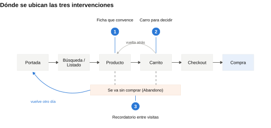
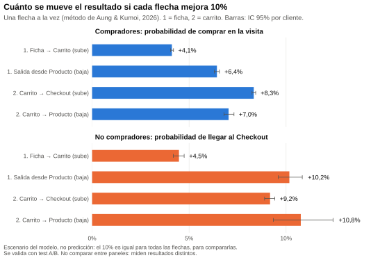
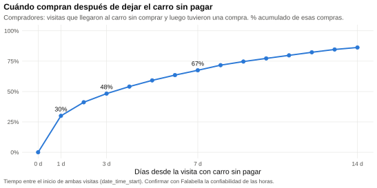

¿Qué 2-3 intervenciones priorizar y en qué estado del journey ubicarlas?
Anexo de la Pregunta 6, versión 2 (13-nov-2026). La pregunta se responde en dos partes: dónde intervenir, con la cadena de Markov de P4 y el método de Aung & Kumoi (2026), y qué hacer, con datos de cada flecha, lo que pasa entre visitas y evidencia externa. Intervalos del 95% por bootstrap por cliente (500 réplicas).
- Ficha que convence (Producto): que quien llega a la ficha avance al carro en vez de irse.
- Carro para decidir (Carrito): que el carro sea donde se decide y se paga, no un punto de vuelta atrás.
- Recordatorio entre visitas: recuperar en los primeros días a quien dejó el carro o una ficha sin comprar.
Por ende, la 1 y la 2 salen del mapa de transiciones (las flechas que más mueven la compra) y la 3 de lo que pasa entre visitas. Son hipótesis que se validan con test A/B.

Método: para qué y cómo se usa Aung & Kumoi
Para qué: P5 dice dónde se van, pero no qué flecha conviene empujar. La prueba de Aung & Kumoi le da a cada flecha el mismo empujón y mide cuánto se mueve la compra. Sirve para elegir dónde probar primero (ellos lo usan para priorizar tests A/B), no para predecir el efecto real.
- Subir una flecha 10% relativo (paper). Ej.: Carrito → Checkout en compradores pasa de 29,30% a 32,23%. Lo que se suma se descuenta, en proporción, de las otras salidas del Carrito hacia páginas. No se tocan la autotransición, la Compra ni el Abandono.
- Bajar una flecha 10% relativo (extensión nuestra, misma lógica): lo que se resta se reparte, en proporción, en las otras salidas hacia páginas. Se aplica a Carrito → Producto y a la salida a Abandono desde Producto (la fuga de P5).
- Recalcular el resultado: B = (I − Q)−1R con la matriz modificada, ponderado por dónde empiezan las visitas. Impacto: δ = l′(B′ − B) (ec. 5 del paper), en cambio relativo.
- Una flecha a la vez, en todas las flechas entre páginas con probabilidad de al menos 2% (37 en compradores y 36 en no compradores).
El 10% no es una predicción: es el mismo empujón para todas, para compararlas. Con 5% o 20% el efecto cambia casi en proporción (ver Confiabilidad). Compradores: probabilidad de comprar en la visita (base 8,74%). No compradores, que por definición no compran en julio: probabilidad de llegar al Checkout (base 2,01%). No se comparan entre grupos.
Qué flechas mueven más el resultado

Compradores · probabilidad de comprar en la visita
| Flecha | Intervención | Tipo de cambio | Base | Con el cambio | Cambio relativo [IC 95%] |
|---|---|---|---|---|---|
| Ficha → Carrito (sube) | 1. Ficha | Paper (sube) | 8,74% | 9,10% | +4,1% [4,0–4,2] |
| Salida desde Producto (baja) | 1. Ficha | Extensión (baja la fuga) | 8,74% | 9,31% | +6,4% [6,3–6,6] |
| Carrito → Checkout (sube) | 2. Carro | Paper (sube) | 8,74% | 9,47% | +8,3% [8,2–8,4] |
| Carrito → Producto (baja) | 2. Carro | Extensión (baja) | 8,74% | 9,36% | +7,0% [6,8–7,3] |
No compradores · probabilidad de llegar al Checkout
| Flecha | Intervención | Tipo de cambio | Base | Con el cambio | Cambio relativo [IC 95%] |
|---|---|---|---|---|---|
| Ficha → Carrito (sube) | 1. Ficha | Paper (sube) | 2,01% | 2,11% | +4,5% [4,2–4,8] |
| Salida desde Producto (baja) | 1. Ficha | Extensión (baja la fuga) | 2,01% | 2,22% | +10,2% [9,6–10,8] |
| Carrito → Checkout (sube) | 2. Carro | Paper (sube) | 2,01% | 2,20% | +9,2% [8,9–9,4] |
| Carrito → Producto (baja) | 2. Carro | Extensión (baja) | 2,01% | 2,23% | +10,8% [9,3–12,4] |
Lectura: las dos flechas que más suman son Carrito → Checkout y Ficha → Carrito, en ambos grupos; la tercera queda lejos (Portada → Carrito: +1,5% y +1,9%). La que más resta es Carrito → Producto. El orden entre las flechas elegidas cambia con el tamaño del empujón, por eso se presentan como grupo.
Barrido completo · compradores
| Flecha | Posición | Probabilidad original (%) | Si sube 10% | Si baja 10% |
|---|---|---|---|---|
| Carrito → Checkout | 1 | 29,3 | +8,33% | -8,35% |
| Producto → Carrito | 2 | 8,9 | +4,11% | -4,17% |
| Portada → Carrito | 3 | 12,4 | +1,46% | -1,47% |
| Checkout → Carrito | 4 | 16,7 | +0,71% | -0,70% |
| Agregar al carro → Carrito | 5 | 12,8 | +0,39% | -0,39% |
| Búsqueda → Carrito | 6 | 2,9 | +0,37% | -0,37% |
| Búsqueda → Producto | 35 | 63,8 | -2,50% | +2,47% |
| Producto → Búsqueda | 36 | 13,8 | -3,31% | +3,27% |
| Carrito → Producto | 37 | 40,6 | -7,07% | +7,04% |
Ver las 37 flechas (compradores)
| Flecha | Posición | Probabilidad original (%) | Si sube 10% | Si baja 10% |
|---|---|---|---|---|
| Carrito → Checkout | 1 | 29,3 | +8,33% | -8,35% |
| Producto → Carrito | 2 | 8,9 | +4,11% | -4,17% |
| Portada → Carrito | 3 | 12,4 | +1,46% | -1,47% |
| Checkout → Carrito | 4 | 16,7 | +0,71% | -0,70% |
| Agregar al carro → Carrito | 5 | 12,8 | +0,39% | -0,39% |
| Búsqueda → Carrito | 6 | 2,9 | +0,37% | -0,37% |
| Listado → Carrito | 7 | 3,6 | +0,25% | -0,25% |
| Otros → Carrito | 8 | 6,7 | +0,08% | -0,08% |
| Otros → Búsqueda | 9 | 2,7 | -0,01% | +0,01% |
| Otros → Producto | 10 | 8,8 | -0,01% | +0,01% |
| Cuenta y servicios → Listado | 11 | 2,4 | -0,02% | +0,02% |
| Portada → Otros | 12 | 2,6 | -0,02% | +0,02% |
| Otros → Cuenta y servicios | 13 | 3,6 | -0,02% | +0,02% |
| Búsqueda → Portada | 14 | 2,2 | -0,03% | +0,03% |
| Listado → Portada | 15 | 4,6 | -0,03% | +0,03% |
| Cuenta y servicios → Producto | 16 | 8,8 | -0,03% | +0,03% |
| Agregar al carro → Búsqueda | 17 | 5,3 | -0,03% | +0,03% |
| Búsqueda → Listado | 18 | 2,2 | -0,04% | +0,04% |
| Listado → Búsqueda | 19 | 7,2 | -0,06% | +0,06% |
| Otros → Portada | 20 | 21,1 | -0,07% | +0,07% |
| Portada → Producto | 21 | 19,6 | -0,11% | +0,11% |
| Cuenta y servicios → Portada | 22 | 13,1 | -0,11% | +0,11% |
| Portada → Listado | 23 | 12,2 | -0,20% | +0,20% |
| Producto → Portada | 24 | 2,0 | -0,31% | +0,31% |
| Carrito → Portada | 25 | 3,2 | -0,33% | +0,33% |
| Portada → Búsqueda | 26 | 21,3 | -0,33% | +0,33% |
| Checkout → Producto | 27 | 12,0 | -0,42% | +0,42% |
| Producto → Agregar al carro | 28 | 5,6 | -0,42% | +0,42% |
| Carrito → Listado | 29 | 4,2 | -0,44% | +0,44% |
| Listado → Producto | 30 | 57,9 | -0,64% | +0,64% |
| Carrito → Búsqueda | 31 | 7,7 | -0,83% | +0,83% |
| Portada → Cuenta y servicios | 32 | 19,5 | -0,99% | +0,98% |
| Producto → Listado | 33 | 7,0 | -1,40% | +1,40% |
| Agregar al carro → Producto | 34 | 75,0 | -1,50% | +1,49% |
| Búsqueda → Producto | 35 | 63,8 | -2,50% | +2,47% |
| Producto → Búsqueda | 36 | 13,8 | -3,31% | +3,27% |
| Carrito → Producto | 37 | 40,6 | -7,07% | +7,04% |
Barrido completo · no compradores
| Flecha | Posición | Probabilidad original (%) | Si sube 10% | Si baja 10% |
|---|---|---|---|---|
| Carrito → Checkout | 1 | 11,8 | +9,17% | -9,20% |
| Producto → Carrito | 2 | 3,6 | +4,48% | -4,49% |
| Portada → Carrito | 3 | 7,6 | +1,93% | -1,94% |
| Agregar al carro → Carrito | 4 | 16,1 | +0,70% | -0,70% |
| Otros → Carrito | 5 | 3,2 | +0,12% | -0,12% |
| Producto → Agregar al carro | 6 | 3,0 | +0,09% | -0,09% |
| Búsqueda → Producto | 34 | 57,1 | -3,66% | +3,67% |
| Producto → Búsqueda | 35 | 13,5 | -4,39% | +4,36% |
| Carrito → Producto | 36 | 42,0 | -10,79% | +10,76% |
Ver las 36 flechas (no compradores)
| Flecha | Posición | Probabilidad original (%) | Si sube 10% | Si baja 10% |
|---|---|---|---|---|
| Carrito → Checkout | 1 | 11,8 | +9,17% | -9,20% |
| Producto → Carrito | 2 | 3,6 | +4,48% | -4,49% |
| Portada → Carrito | 3 | 7,6 | +1,93% | -1,94% |
| Agregar al carro → Carrito | 4 | 16,1 | +0,70% | -0,70% |
| Otros → Carrito | 5 | 3,2 | +0,12% | -0,12% |
| Producto → Agregar al carro | 6 | 3,0 | +0,09% | -0,09% |
| Cuenta y servicios → Carrito | 7 | 2,1 | +0,07% | -0,07% |
| Listado → Portada | 8 | 4,4 | +0,03% | -0,03% |
| Búsqueda → Portada | 9 | 2,2 | +0,02% | -0,02% |
| Checkout → Carrito | 10 | 34,4 | 0,00% | 0,00% |
| Checkout → Producto | 11 | 16,8 | 0,00% | 0,00% |
| Checkout → Portada | 12 | 4,6 | 0,00% | 0,00% |
| Cuenta y servicios → Otros | 13 | 2,3 | -0,01% | +0,01% |
| Cuenta y servicios → Listado | 14 | 5,2 | -0,03% | +0,03% |
| Cuenta y servicios → Producto | 15 | 6,5 | -0,03% | +0,03% |
| Portada → Otros | 16 | 3,1 | -0,04% | +0,04% |
| Otros → Búsqueda | 17 | 9,0 | -0,05% | +0,05% |
| Otros → Portada | 18 | 17,1 | -0,05% | +0,05% |
| Búsqueda → Listado | 19 | 2,4 | -0,05% | +0,05% |
| Otros → Producto | 20 | 10,5 | -0,05% | +0,05% |
| Listado → Búsqueda | 21 | 6,0 | -0,07% | +0,07% |
| Cuenta y servicios → Portada | 22 | 15,6 | -0,08% | +0,08% |
| Agregar al carro → Búsqueda | 23 | 8,9 | -0,08% | +0,08% |
| Portada → Cuenta y servicios | 24 | 5,9 | -0,10% | +0,10% |
| Carrito → Portada | 25 | 5,1 | -0,62% | +0,62% |
| Portada → Listado | 26 | 16,1 | -0,63% | +0,63% |
| Portada → Producto | 27 | 23,3 | -0,75% | +0,75% |
| Carrito → Listado | 28 | 7,1 | -0,95% | +0,95% |
| Portada → Búsqueda | 29 | 25,7 | -0,97% | +0,97% |
| Carrito → Búsqueda | 30 | 8,5 | -1,15% | +1,15% |
| Listado → Producto | 31 | 46,0 | -1,54% | +1,54% |
| Agregar al carro → Producto | 32 | 62,6 | -1,59% | +1,58% |
| Producto → Listado | 33 | 8,1 | -2,28% | +2,29% |
| Búsqueda → Producto | 34 | 57,1 | -3,66% | +3,67% |
| Producto → Búsqueda | 35 | 13,5 | -4,39% | +4,36% |
| Carrito → Producto | 36 | 42,0 | -10,79% | +10,76% |
Fuga por estado (extensión: bajar la salida 10%)
| Grupo | Estado | Probabilidad de irse (por clic, %) | Si la salida baja 10% |
|---|---|---|---|
| Compradores | Producto | 12,7 | +6,43% |
| Compradores | Carrito | 10,8 | +1,67% |
| Compradores | Búsqueda | 11,0 | +1,14% |
| Compradores | Portada | 11,5 | +0,98% |
| Compradores | Listado | 14,1 | +0,77% |
| No compradores | Producto | 27,4 | +10,17% |
| No compradores | Carrito | 20,8 | +2,74% |
| No compradores | Listado | 29,6 | +1,41% |
| No compradores | Portada | 17,6 | +1,07% |
| No compradores | Búsqueda | 15,8 | +0,97% |
Qué significa cada flecha en los datos
| Medida | Compradores | No compradores |
|---|---|---|
| Ficha→Carrito: ya agregó algo antes en la misma visita | 50,9% [49,6–52,2] | 35,9% [31,2–41,5] |
| Carrito→Ficha: es un producto que ya había visto en la visita | 68,0% [67,0–69,2] | 64,6% [60,5–69,4] |
| Carrito→Ficha: es un producto que ya había agregado en la visita | 29,3% [28,0–30,7] | 26,8% [21,7–32,1] |
| Después de volver a la ficha: regresa al Carrito | 57,5% [56,3–58,8] | 54,0% [48,9–58,7] |
| Después de volver a la ficha: la visita termina sin comprar | 14,9% [14,2–15,7] | 23,4% [20,4–26,9] |
Lectura: Ficha → Carrito es abrir el carro desde la ficha (siempre llega a la página basket); en cerca de la mitad de los casos el carro ya traía productos de antes. Carrito → Producto es volver a revisar un producto que ya se había visto. Después, más de la mitad vuelve al carro; el no comprador se va más.
Lo que pasa entre visitas
| Compradores | Probabilidad [IC 95%] |
|---|---|
| Compradores con más de una visita en julio | 96,1% [95,5–96,6] |
| Su 1ª compra no fue en su 1ª visita | 81,9% [80,9–83,1] |
| Visitas con compra sin 'Agregar al carro' en esa visita | 44,9% [43,6–46,4] |
| Llegó al carro y no pagó: compra en una visita posterior | 66,7% [65,3–68,1] |
| Solo vio fichas y no compró: compra en una visita posterior | 57,0% [55,8–58,2] |
| No compradores | Probabilidad [IC 95%] |
|---|---|
| No compradores con más de una visita en julio | 71,0% [69,8–72,2] |
| No compradores que vieron al menos una ficha | 87,4% [86,5–88,3] |
| No compradores que llegaron al carro al menos una vez | 15,0% [14,1–16,1] |
| Tras dejar el carro sin pagar (compradores) | Probabilidad [IC 95%] |
|---|---|
| Compra dentro de 24 horas | 30,0% [28,8–31,3] |
| Compra dentro de 3 días | 48,3% [46,9–49,7] |
| Compra dentro de 7 días | 67,5% [66,2–68,9] |

La cadena mira dentro de la visita; esto es evidencia descriptiva. Las horas usan el inicio de cada visita (date_time_start): hay que confirmar con Falabella que son confiables. "Sin Agregar al carro en esa visita" puede incluir productos agregados por una vía que no queda registrada.
Las tres intervenciones
| Intervención | Qué probar | Por qué (datos) | Para quién |
|---|---|---|---|
| 1. Ficha que convence (Producto) | Costo y fecha estimada de despacho junto al precio. Botón Agregar al carro fijo al bajar en la ficha y acceso al carro con el número de productos. Destacar Guardar en Mis listas si no agrega. | Mayor fuga (P5). Ficha → Carrito y la salida desde Producto están entre las flechas que más mueven la compra. | Sobre todo no compradores: se van 47,2% al dejar la ficha (compradores 25,0%). |
| 2. Carro para decidir (Carrito) | Total con despacho y fecha estimada visibles en el carro. Ver talla, color y características clave de cada producto sin salir del carro. Botón Ir a pagar fijo. | Carrito → Checkout es la flecha que más suma; Carrito → Producto, la que más resta. 2 de cada 3 vueltas son a un producto ya visto. | Ambos. El no comprador pasa menos al pago (11,8% vs 29,3%) y se va más tras volver a la ficha (23,4% vs 14,9%). |
| 3. Recordatorio entre visitas | Carro sin pagar: notificación en la app o correo con ese producto dentro de 24 horas y un segundo recordatorio hasta los 3 días. Solo miró fichas: mensaje de la categoría, no del producto exacto. Al volver, el carro guardado visible en la Portada. | 96,1% de los compradores vuelve; 44,9% de las compras viene de un carro de antes; la mitad de las compras tras dejar el carro ocurre en 3 días. | Compradores con carro sin pagar (mensaje específico). No compradores que solo miraron (categoría) o que llegaron al carro (15,0%). |
Las acciones son hipótesis: falta revisar en la app qué de esto ya existe.
- H1: si la ficha muestra el despacho (costo y fecha) y el carro está a un toque, sube el paso de la ficha al carro y baja la salida desde la ficha, sobre todo en no compradores.
- H2: si el carro muestra el total con despacho y deja revisar el producto sin salir, sube el paso al Checkout y bajan las vueltas a la ficha.
- H3: un recordatorio en los primeros 3 días aumenta el regreso y la compra frente a un grupo que no lo recibe.
Factibilidad y medición
| Intervención | Pros | Contras y riesgos | Costo y dificultad | Cómo medir |
|---|---|---|---|---|
| 1. Ficha | Ataca la mayor fuga y la mayor brecha del no comprador. Es un cambio de interfaz. | Ficha más cargada. Si el despacho es caro o lento, mostrarlo antes puede bajar el avance (igual aparecería en el Checkout). | Media: calcular el despacho por comuna en la ficha exige conectar logística con la ficha. Equipo: producto digital y logística. | A/B por cliente. KPI: paso de la ficha al carro y salida desde la ficha. Control: compra por visita. |
| 2. Carro | Mayor efecto en compradores. Actúa donde ya hay intención. | Tocar el paso al pago es sensible: un error baja ventas. | Media-alta. Equipo: checkout y pagos. | A/B por cliente. KPI: paso Carrito → Checkout y vueltas a la ficha. Control: errores en el pago. |
| 3. Recordatorio | Bajo costo: usa el CRM y las notificaciones que Falabella ya usa. Llega al no comprador que se fue. | Muchos volverían igual (2 de 3). Saturar al cliente. Requiere su consentimiento. | Baja-media. Equipo: CRM y marketing. | Grupo control sin recordatorio. KPI: regreso y compra en 7 días. Control: bajas de notificaciones. |
Costo y dificultad son una evaluación cualitativa: no tenemos costos reales de Falabella.
Orden sugerido
- Recordatorio: el más barato y rápido; se mide limpio con grupo control.
- Ficha: riesgo bajo y ataca la mayor fuga.
- Carro: el de más riesgo; al final y con controles.
Orden por costo y riesgo, no por la simulación.
Por qué no otras
- Búsqueda (ej. asistente con IA): retener en Búsqueda mueve +1,1% en compradores.
- Portada: su mejor flecha (hacia el carro) mueve +1,5% y +1,9%.
- Checkout: casi no se pierde ahí en compradores, y pocos no compradores llegan (1,5% de sus visitas).
- Descuentos generales: Lee (2020) muestra que el precio pesa, pero no tenemos precios para medirlo y es caro.
Confiabilidad
¿El modelo reproduce la base?
| Grupo | Resultado | Observado en los datos | Modelo (orden 1) | IC 95% del modelo |
|---|---|---|---|---|
| Compradores | Compra en la visita | 8,74% | 8,74% | [8,55–8,93] |
| No compradores | Llega al Checkout | 1,52% | 2,01% | [1,71–2,40] |
En compradores reproduce exactamente la compra por visita. En no compradores sobreestima la llegada al Checkout; por eso se reportan cambios relativos.
Solo visitas hasta la 1ª compra
| Medida | Todas las visitas | Solo visitas hasta la 1ª compra |
|---|---|---|
| Visitas de compradores | 82.236 | 33.534 (40,8%) |
| Compra por visita (base) | 8,74% | 14,91% |
| Flecha que más suma | Carrito → Checkout | Carrito → Checkout |
| Segunda que más suma | Producto → Carrito | Producto → Carrito |
| Flecha que más resta | Carrito → Producto | Carrito → Producto |
| Ficha → Carrito (sube) | +4,1% | +3,7% |
| Salida desde Producto (baja) | +6,4% | +5,8% |
| Carrito → Checkout (sube) | +8,3% | +7,6% |
| Carrito → Producto (baja) | +7,0% | +6,0% |
Los compradores incluyen visitas después de su 1ª compra (matriz principal de P4). Con solo las visitas hasta la 1ª compra, las mismas flechas quedan arriba.
Tamaño del empujón
| Grupo | Flecha | 5% | 10% (principal) | 20% |
|---|---|---|---|---|
| Compradores | Ficha → Carrito (sube) | +2,1% | +4,1% | +8,2% |
| Compradores | Salida desde Producto (baja) | +3,1% | +6,4% | +13,6% |
| Compradores | Carrito → Checkout (sube) | +4,2% | +8,3% | +16,6% |
| Compradores | Carrito → Producto (baja) | +3,5% | +7,0% | +14,0% |
| No compradores | Ficha → Carrito (sube) | +2,2% | +4,5% | +8,9% |
| No compradores | Salida desde Producto (baja) | +5,0% | +10,2% | +21,5% |
| No compradores | Carrito → Checkout (sube) | +4,6% | +9,2% | +18,3% |
| No compradores | Carrito → Producto (baja) | +5,4% | +10,8% | +21,5% |
Con vs sin autotransiciones
| Grupo | Escenario | Con autotransiciones | Sin autotransiciones | Diferencia |
|---|---|---|---|---|
| Compradores | Base | 8,74% | 8,74% | 0,00 |
| Compradores | Ficha → Carrito (sube) | 9,10% | 9,10% | 0,00 |
| Compradores | Salida desde Producto (baja) | 9,31% | 9,31% | 0,00 |
| Compradores | Carrito → Checkout (sube) | 9,47% | 9,47% | 0,00 |
| Compradores | Carrito → Producto (baja) | 9,36% | 9,36% | 0,00 |
| No compradores | Base | 2,01% | 2,01% | 0,00 |
| No compradores | Ficha → Carrito (sube) | 2,11% | 2,11% | 0,00 |
| No compradores | Salida desde Producto (baja) | 2,22% | 2,22% | 0,00 |
| No compradores | Carrito → Checkout (sube) | 2,20% | 2,20% | 0,00 |
| No compradores | Carrito → Producto (baja) | 2,23% | 2,23% | 0,00 |
- Escenario, no causalidad: se supone que empujar una flecha no cambia el resto del recorrido.
- Intervalos: miden la incertidumbre del cálculo con estos datos, no la del efecto de una intervención real.
- Muestra balanceada: cambios relativos dentro de cada grupo, no la conversión real del sitio.
- Orden 1: limitación ya declarada en M.1. La versión 1 de este anexo verificó que con orden 2 las mismas flechas quedan arriba (ver v1).
Respaldo de comportamiento del consumidor
- Ficha: el 64% de los usuarios busca el costo de despacho en la ficha y el 43% de los sitios no lo muestra; Baymard recomienda mostrar la fecha estimada de entrega, que el 41% de los sitios no da. El 58,6% abandonó un sitio por estar solo mirando (Baymard, UX statistics; Baymard, delivery date).
- Carro: principales causas de abandono en el pago: costos extra (40%), despacho lento (20%), crear cuenta obligatoria (18%) y proceso difícil (17%) (Baymard). El carro también se usa para obtener más información, ordenar productos y esperar promociones (Close y Kukar-Kinney, 2010, Journal of Business Research).
- Recordatorio: en un experimento con más de 230.000 visitantes, el retargeting subió cerca de 15% el regreso de quienes vieron un producto, y el efecto se concentra en los primeros días (Sahni, Narayanan y Kalyanam, 2019). El anuncio con el producto exacto funciona peor que uno genérico salvo cuando la preferencia ya está definida (Lambrecht y Tucker, 2013, Journal of Marketing Research). Quienes vuelven al sitio tienen más probabilidad de comprar (Lee, 2020).
- Chile: el comercio electrónico superó los US$10.000 millones en 2025 (cerca del 12,6% de las ventas del comercio) y 2 de cada 3 personas compra online en el mes (CCS, vía Chócale). En la muestra, el 93% de los clics es en la app.
Qué cambió respecto a la versión 1
- La P6 se separa en dónde intervenir y qué hacer.
- Se agregan la flecha que más resta (Carrito → Producto, ahora simulada al bajarla) y el recordatorio entre visitas.
- Las flechas van como grupo, sin ranking; se quitan el escenario de las tres juntas y el orden 2.
- Las flechas que bajan se declaran como extensiones propias.
- Cada intervención trae acciones, hipótesis, factibilidad, medición y respaldo externo.
Descargas
- Script (R): fase8_p6_v2.R. Lee df_falabella_estados.rds sin modificarlo y guarda las tablas en la carpeta resultados_p6_v2.
- Todos los resultados de esta página: p6v2_anexo.json.
- Versión 1 de este anexo (12-nov): anexo-p6/v1.html.
- Anexo de P5 (fugas): anexo-p5.
Anexo P6 · Desafío 2 Customer Journey Falabella · Datos: julio 2026, 10.000 clientes. Cálculo propio en R.